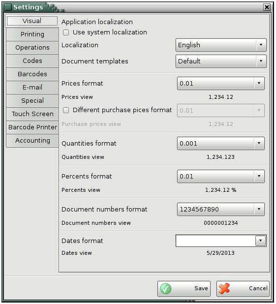
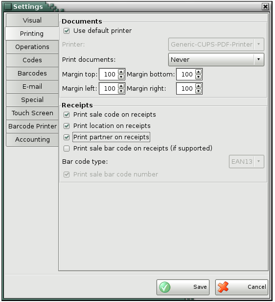
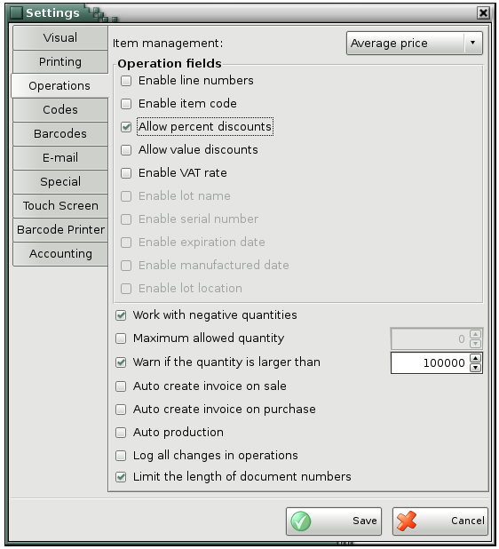
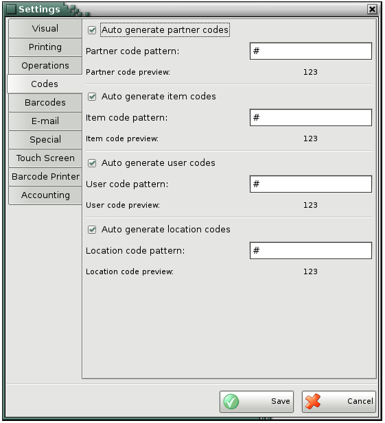
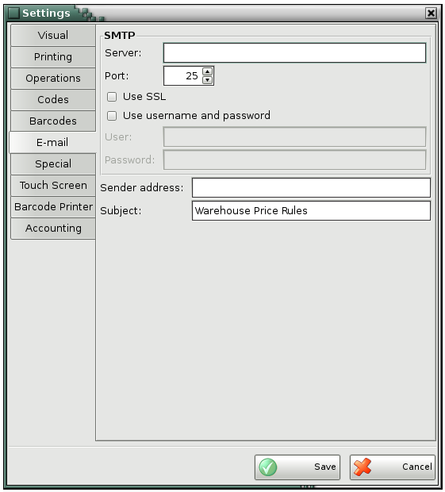
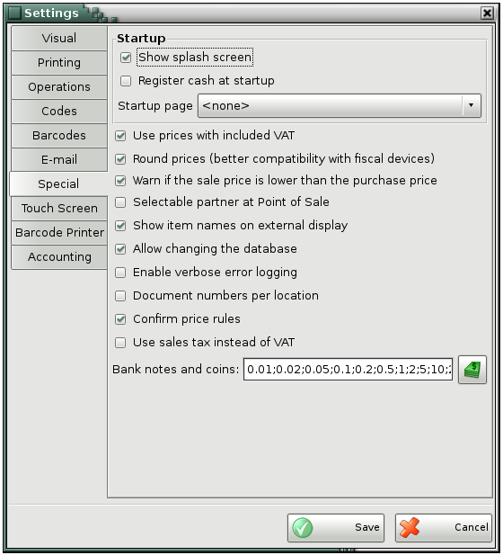
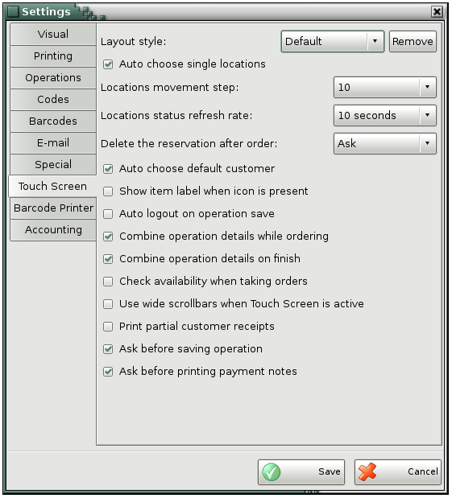

Settings
You can use the Settings window to configure
the application based on specific needs (click the  icon to
open it). The information is divided into categories placed in the left part of
the screen. Select a category to display all its settings. Click the Save button
to save changes and close the window. Click Cancel to exit without saving
changes.
icon to
open it). The information is divided into categories placed in the left part of
the screen. Select a category to display all its settings. Click the Save button
to save changes and close the window. Click Cancel to exit without saving
changes.
The Settings window has ten categories:
Visual, Printing, Operations, Codes, Barcodes, E-mail,
Special, Touch Screen, Barcode Printer and
Accounting.

Visual
settings
Localization - it
is used to set the language interface.
Prices format -
defines the format of prices in operations.
Different purchase prices
format - purchase prices can be with different format.
Quantities format -
defines the format of quantities in operations.
Percents format -
defines the format of percents in operations;
Document numbers format
- defines the format of document numbers;
Dates
format - if the date format is dd.MM.yyyy, the date will be
visualized as 08.05.2013. The default date format is 08/05/11.

Use the Printing
settings to determine how documents and receipts will be
printed.
Use document
printer - if it is selected the application allows you to print stock
receipts, protocols, invoices and reports.
Use default
printer - if it is selected then the default system printer will be
used for printing.
Print documents -
select Never if you do not wish to print
documents, select Ask to display a confirmation
window before printing, select Always to print
documents directly.
Print sale code on
receipts - sale's number will be printed on the receipt.
Print location on
receipts - location's name will be printed on the receipt.
Print partner on
receipts - partner's name will be printed on the receipt.
Print sale barcode on
receipts - items' barcodes will be printed on the receipt.

Item management - you
can choose between the following methods:
- Average price � lots are disabled and an average
purchase price is formed.
- Last purchase price � lots are disabled and the last
entered purchase price is used.
- FIFO � lots are enabled and items are written-off
following the rule "first in � first out", i.e. the first incoming lot is the
first to be written-off.
- LIFO � lots are enabled and items are written-off
following the rule "last in � first out", i.e. the last incoming lot is the
first to be written-off.
- Choice � lots are enabled and items can be
written-off from a selected lot.
- FEFO - lots are enabled and items are written-off by
best before date.
Enable item code - adds
items codes in the operations windows.
Allow percent
discounts - adds discount field in sales and purchases, and
Discount button, through wich you may set discount in
percent for the whole document.
Allow value
discounts - adds discount field and Discount
button in sales and purchases, but the discount is value and it is charged over
the whole document amount.
Enable lot name - if you are working with
lots this setting vizualizes a column for lot name in the operations
windows.
Enable serial number - if you are working with lots this
setting vizualizes a column for serial number in the operations windows.
Enable expiration date -
if you are working with lots this setting vizualizes a column for expiration
date in the operations windows.
Enable manufactured date
- if you are working with lots this setting vizualizes a column for
manufactured date in the operations windows.
Enable lot location - if
you are working with lots this setting vizualizes a column for lot location in
the operations windows.
Work with negative
quantities - determines whether to allow work with negative item
quantities in databases.
Maximum allowed quantity -
determines the maximum quantity that a user can enter for one item
when saving operation.
Warn if the quantity is
larger than - a message shows after saving an operation when the entered
quantity is larger than the selected one.
Auto create invoice on
sale - invoices are generated upon saving of sales.
Auto create invoice on
purchase - received invoices are generated upon saving
of purchases.
Auto
production - the recipes are automatically
produced upon sale without having to perform the operation "Production".
Also, when saving production operation, the raw materials which
are recipes are automatically produced.
Log all changes in operations
- when a user changed the item quantity in operation, this action is
written in the application log.

Codes settings
are used for automatic generation of codes for partners, items, users and
locations when creating them from Edit menu. Symbol
"#" is the changing part of the code and also you can enter constants before or
after it. For example if you write "A#", the codes series will be: A1, A2,
A3... If you enter "#00", the codes that will be generated will be:
100, 200, 300...

E-mail settings
are used when you are working with price rule for sending
e-mail. Enter server name or IP address, port number and sender
address. If it is necessary to use SSL or to enter user and password check the
corresponding fields.

You can use
the Special settings to display information on external
displays.
Show splash
screen - determines whether to display a splash screen on startup.
Startup page - you
may select a module that will be automatically loaded after starting the
program.
Use prices with included
VAT - determines whether the prices used for items include VAT or it
is added after that.
Round prices -
rounds items prices to avoid differences between the amounts when saving
the document and when printing cash receipt.
Warn if the sale price is
lower than the purchase price - when saving the operation allows if
the sale price is lower than the purchase price.
Selectable partner at Point
of Sale - determines whether the Partner field will remain
active after saving the operation.
Allow changing the
database - when it is not active the changing of database is
forbidden.
Document numbers per location
- allows selection of initial document number for each location
and for each document type.
Confirm price rules -
when you save an operation, the application opens a window, containing a
list of all price rules, applied to the corresponding operation and showing how
they affect the operation.
Banknotes and coins -
allows to determine banknotes and coins that are specific for the selected
country.

Touch Screen
Settings
Auto choose single
locations - when there is only one location entered in the Touch
screen, the operation is automatically saved for this location.
Locations movement
step - when arranging the locations, it determines the minimal
distance they can be from one onother.
Auto choose default
customer - the operation is saved for the client who is set to
default in the Touch screen.
Show item label when icon is
present - when an item icon is added, also the item's name is
shown.
Auto logout on operation
save - after saving an operation the touch screen is closed and
then the Identification window is shown.
Combine operation details
while ordering - combines equal items upon saving of order.
Combine operation
details on finish - combine equal items upon finishing order.
Check availability when
taking orders - when you don't work with negative quantities and there
is is not enought in stock from the ordered items, the program warns upon
saving of an order.
Use wide scrollbars when
Touch Screen is active - the scrollbars in the Touch Screen are
getting wider.
Ask before saving
operation - shows an warning message before saving an order.
Ask before printing payment
notes - shows an warning message before printing a payment document.
Click on Clear
settings button to remove the Touch Screen settings for
definite databases.
�2006-2015
Microinvest, All rights reserved